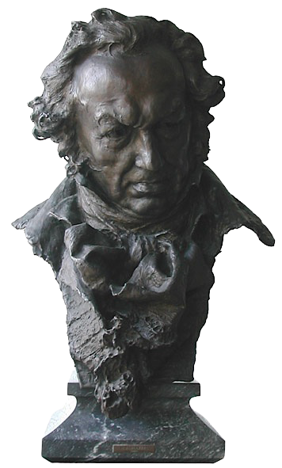
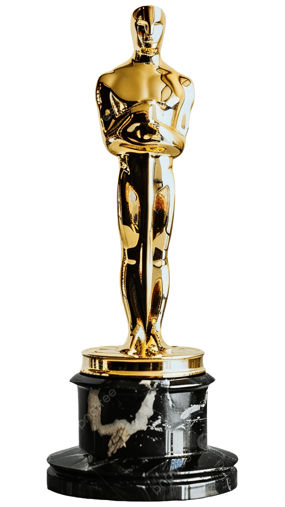

Arquitecto del Suspense
Alejandro Amenábar
"El miedo no está en lo que ves, sino en lo que imaginas."
La inquietud como lenguaje
Alejandro Amenábar es un director, guionista y compositor hispano-chileno reconocido por su dominio del thriller psicológico y el drama existencial. Desde su debut con Tesis (1996), ganadora de varios Premios Goya, su cine ha explorado el miedo, la identidad y la percepción de la realidad. Con Mar adentro (2004) alcanzó reconocimiento internacional al obtener el Óscar a la Mejor Película de Habla No Inglesa, un Globo de Oro y 14 Premios Goya, consolidándose como uno de los cineastas más influyentes del cine español contemporáneo.



Roba la Paleta
Haz clic en una tira de color para copiar su HEX y teñir el universo.
Verde militar
Ventanas cerradas
Rojo Nuria
Snuff Movies
Azul Mar
¡Color copiado!
Filmografía Selecta
2001
Los Otros